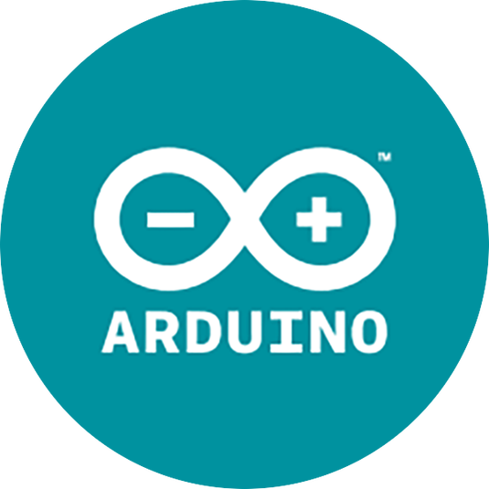

IoT Interoperability: Edge-Based IoT Platform
Source Code: Edged-Based IoT Platform
Project Summary Poster: Edged-Based IoT Platform Poster


This project is my 3rd year project dissertation which successfully provides a solution to technical interoperability through the development of an edge-based IoT gateway. This gateway provides a single consistent interface with a range of standardised communication protocol capabilities for a set of heterogeneous devices. Along with this, a web application is developed for user interaction of the system and provides cloud integration for external data storage.
Portable Distance Meter
Circuit Diagram: Portable Distance Meter Circuit
{kind=link}

Winning design for the University of Southampton Electronic Engineering 2nd year group design project. The portable distance meter calculates the distance between two points and perpendicular distance to those two points. It also allows for a 2D outline scan of the surroundings either full or partial, the angle is chosen by the user.
Sorting Algorithms Visualisation Web Page
Source Code: Sorting Algorithm Visualisation Code Live View: Sorting Algorithm Visualisation Page
This web page gives a visualisation of how five of the most popular sorting algorithms operate by displaying their step-by-step procedure for sorting a set of random numbers into ascending order.
Custom Network Architecture for Embedded Systems
Source Code: Custom Network Architecture
Custom 5-layer protocol stack designed from scratch in a team of 3. This was written in C and implemented on a Il Matto Development Board, which contains an integrated AVR ATmega644P Microcontroller. The Il Matto is interfaced with a RFM12B wireless transceiver for radio communication.
MIPs Architecture C++ Computer Simulator
Source Code: Computer Simulator

Implementation of a Von Neumann architecture simulation in C++, following a fetch→decode→execute →write-back→memory access cycle. A limited instruction set and register topology is designed. The architecture reads assembly code from a text file and prints architecture output.
Java Sudoku Generator-Solver
Source Code: Sudoku Generator-Sovler

Implementation of a 9x9 Sudoku generator and solver written in Java. A puzzle can be randomly generated or input by the user in rows. The solution to the puzzle is calculated through a recursive backtracking algorithm.